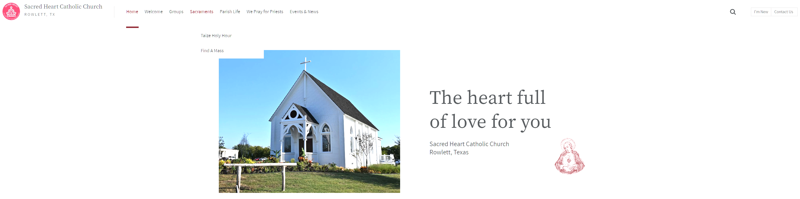
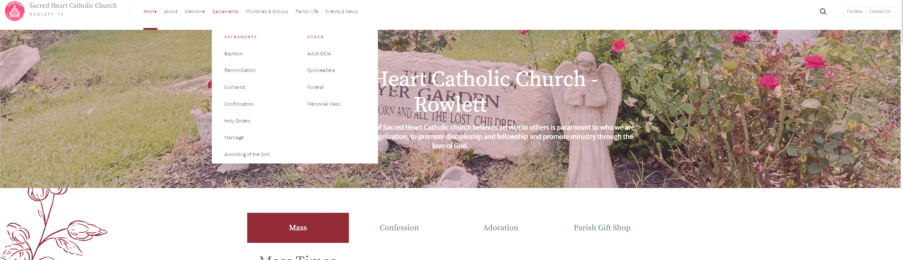

Outcome: Reduced friction for accessing Mass times and key parish information Scope: Website structure, navigation, content prioritization Tools: eCatholic, Google Analytics
Role: Owner | Focus: UX + Communications Strategy
Improved usability and content clarity for high-traffic parish information.
Impact
Improved visibility of Mass times
Reduced clicks to key information
Restructured navigation
Before

After

Live Website:
sacredheartrowlett.org
Primary digital platform for parish communications, events, and ministries
Town Hall Communications
Outcome: Translated multi-department input into a unified leadership presentation Scope: Messaging structure, slide narrative, stakeholder synthesis Tools: Canva, internal communications
Developed a full marketing and go-to-market strategy for Card.io, a gamified fitness concept that turns cardio activity into territorial competition through location-based engagement.
Strategic Focus
Defined positioning as a competitive, social-first fitness platform
Developed acquisition strategy focused on fitness + gaming crossover audiences
Built messaging framework emphasizing competition, movement, and community engagement
Go-To-Market Strategy
SEO / ASO optimization for fitness + gamification search intent
Short-form social media strategy centered on challenges and UGC
Paid media targeting fitness enthusiasts and competitive gamers
Outcome
Created structured launch framework for early-stage user acquisition
Defined scalable content + growth loops for long-term engagement